Tank stats
The Best Performing Tanks
Highest Relative WR
The graph shows the tanks with the highest Relative WR. That is the average of players' WR in a tank compared to their average WR at the tier (in all same tier tanks). Relative WR is a measure of the performance/strength of the tank.
- All the statistics are about battles fought during the update 7.8 only.
- The impact of “Stock-grind battles” is reduced based on tier-specific requirement for total battles at the end of the update. Only players with more than 0-152 (depending on the tier) battles in a tank in the end of the update are included to eliminate the impact of the first battles in the tank (with sub-100% crew / modules).
- The players need to have 10-20 battles in a tank and 20-40 battles at the tier during the update.
- Average WR is the players’s average WR in the tank
- Player WR at Tier is the average WR of the players of the tank at the tier. Since different tiers have different difficulty, it is more meaningful to compare players' performance in the same tier tanks.
- Only tanks with more than 400 players are listed. This may filter out few upcoming tanks that are being tested.
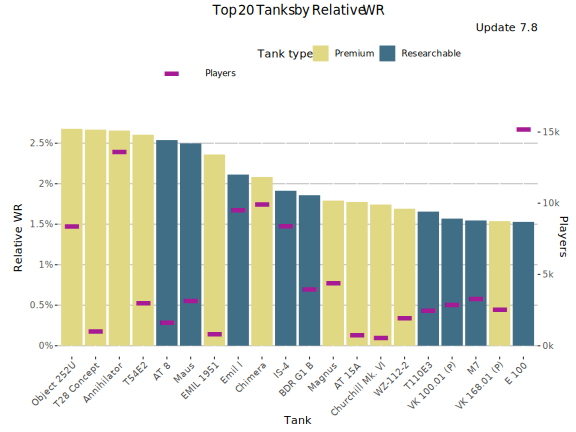
Highest Relative WR - Table
| Tank | Relative WR | Average WR | Player WR at Tier | Players | Battles/Player | Tank type |
|---|---|---|---|---|---|---|
| Object 252U | 2.68% | 57.2% | 54.5% | 8 411 | 68 | Premium |
| T28 Concept | 2.67% | 54.6% | 51.9% | 1 034 | 53 | Premium |
| Annihilator | 2.66% | 59.5% | 56.9% | 13 639 | 104 | Premium |
| T54E2 | 2.6% | 58.8% | 56.2% | 3 021 | 58 | Premium |
| AT 8 | 2.54% | 53.3% | 50.7% | 1 663 | 61 | Researchable |
| Maus | 2.5% | 55.3% | 52.8% | 3 175 | 62 | Researchable |
| EMIL 1951 | 2.36% | 58.3% | 55.9% | 841 | 76 | Premium |
| Emil I | 2.11% | 53.8% | 51.7% | 9 546 | 83 | Researchable |
| Chimera | 2.08% | 59.5% | 57.5% | 9 948 | 82 | Premium |
| IS-4 | 1.91% | 54.3% | 52.4% | 8 421 | 70 | Researchable |
| BDR G1 B | 1.86% | 54.6% | 52.7% | 3 993 | 70 | Researchable |
| Magnus | 1.79% | 53.6% | 51.8% | 4 429 | 57 | Premium |
| AT 15A | 1.78% | 52.1% | 50.3% | 782 | 60 | Premium |
| Churchill Mk. VI | 1.74% | 53.2% | 51.5% | 587 | 49 | Premium |
| WZ-112-2 | 1.69% | 55.4% | 53.7% | 1 974 | 57 | Premium |
| T110E3 | 1.66% | 54.6% | 53% | 2 493 | 72 | Researchable |
| VK 100.01 (P) | 1.57% | 51.4% | 49.8% | 2 902 | 72 | Researchable |
| M7 | 1.55% | 54.2% | 52.7% | 3 318 | 66 | Researchable |
| VK 168.01 (P) | 1.54% | 52% | 50.5% | 2 561 | 57 | Premium |
| E 100 | 1.53% | 52.5% | 50.9% | 15 226 | 70 | Researchable |
Relative WR by player skill-level
This graph shows the best performing tanks by Relative WR by player skill-levels measured as WR at the tank’s tier.
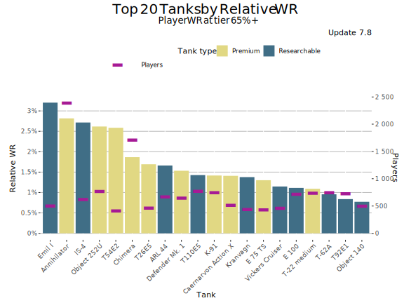
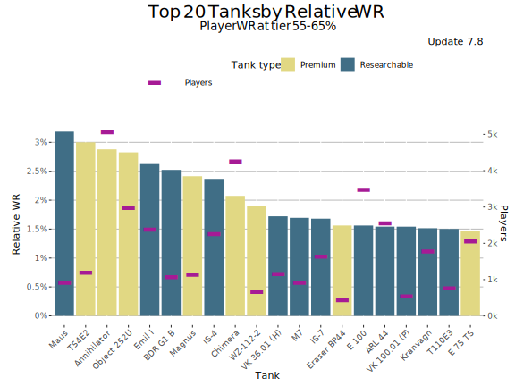
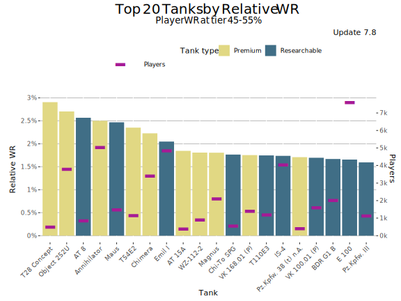
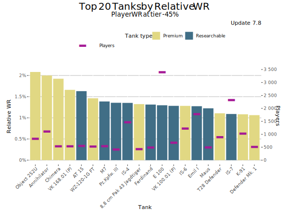
Highest Average WR
This graph shows the tanks with the highest average WR during update 7.8. Player WR denotes the tank’s players' average WR across all the tanks during the update.
- Only battles in maxed-out tanks are taken into account. It is assumed that a tank is maxed out if it is a) premium tank or b) player has more than certain number of battles in it in the end of the update (tier dependent: Tier I: 0 battles, Tier X: 152 battles.
- Since the data is fetched once per update, the stats for just released new Tech-Tree tanks is lower than it should be since the battles players ground the tanks from stock are included in the average.
- On the other hand new high tier tanks are often ground first by more active and also better players that distorts the average WR.
- Only tanks with more than 400 players are listed. This may filter out few upcoming tanks that are being tested.
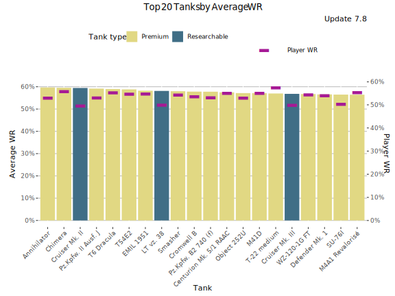
Highest Average WR - Table
Average WR denotes average WR in a tank across all the players during the update. Player WR denotes the tank’s players' average WR across all the tanks during the update.
| Tank | Average WR | Player WR | Players | Battles/Player | Tank type |
|---|---|---|---|---|---|
| Annihilator | 59.7% | 53.1% | 14 830 | 98 | Premium |
| Chimera | 59.5% | 55.9% | 10 187 | 81 | Premium |
| Cruiser Mk. II | 59.4% | 49.7% | 985 | 47 | Researchable |
| Pz.Kpfw. II Ausf. J | 59.2% | 53.2% | 550 | 42 | Premium |
| NA | 59% | 55.4% | 4 211 | 70 | Premium |
| T54E2 | 58.8% | 54.8% | 3 083 | 58 | Premium |
| EMIL 1951 | 58.2% | 54.9% | 861 | 75 | Premium |
| LT vz. 38 | 58.1% | 50.1% | 592 | 37 | Researchable |
| Smasher | 58% | 54.4% | 10 479 | 84 | Premium |
| Cromwell B | 57.8% | 53.7% | 1 645 | 54 | Premium |
| Pz.Kpfw. B2 740 (f) | 57.8% | 53.2% | 773 | 70 | Premium |
| Centurion Mk. 5/1 RAAC | 57.5% | 55.2% | 976 | 58 | Premium |
| Object 252U | 57.1% | 53.1% | 8 682 | 67 | Premium |
| M41D | 57.1% | 55.2% | 793 | 53 | Premium |
| T-22 medium | 57% | 57.5% | 4 921 | 57 | Premium |
| Cruiser Mk. III | 56.8% | 49.9% | 1 245 | 41 | Researchable |
| WZ-120-1G FT | 56.7% | 54.5% | 6 247 | 73 | Premium |
| Defender Mk. 1 | 56.6% | 54.1% | 5 710 | 69 | Premium |
| SU-76I | 56.5% | 50.4% | 481 | 55 | Premium |
| M4A1 Revalorisé | 56.4% | 55.5% | 2 629 | 53 | Premium |
Highest Average Damage (tier-for-tier)
This graph shows the tanks with the highest average damage vs tier average during update 7.8. For the overall highest average damage chart, please see Tier X Average Damage rankings.
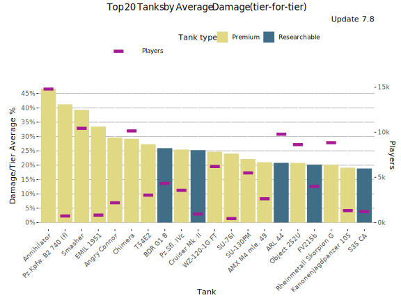
Highest Average Damage (tier-for-tier) - Table
| Tank | Damage/Tier Average % | Average WR | Average Damage | Players | Tier | Vehicle Class | Tank type |
|---|---|---|---|---|---|---|---|
| Annihilator | 46.7% | 59.5% | 1 650 | 14 830 | 7 | Heavy Tank | Premium |
| Pz.Kpfw. B2 740 (f) | 41.2% | 59.2% | 707 | 773 | 4 | Heavy Tank | Premium |
| Smasher | 39.3% | 57.6% | 1 567 | 10 479 | 7 | Heavy Tank | Premium |
| EMIL 1951 | 33.5% | 58.2% | 1 808 | 861 | 8 | Heavy Tank | Premium |
| Angry Connor | 29.6% | 53% | 751 | 2 231 | 5 | Tank Destroyer | Premium |
| Chimera | 29.2% | 59.2% | 1 751 | 10 187 | 8 | Medium Tank | Premium |
| T54E2 | 27.3% | 58.4% | 1 725 | 3 083 | 8 | Heavy Tank | Premium |
| BDR G1 B | 25.9% | 55% | 730 | 4 381 | 5 | Heavy Tank | Researchable |
| Pz.Sfl. IVc | 25.4% | 52% | 727 | 3 627 | 5 | Tank Destroyer | Premium |
| Cruiser Mk. II | 25.2% | 58.4% | 396 | 985 | 1 | Light Tank | Researchable |
| WZ-120-1G FT | 24.7% | 56.5% | 1 689 | 6 247 | 8 | Tank Destroyer | Premium |
| SU-76I | 24% | 57.3% | 538 | 481 | 3 | Tank Destroyer | Premium |
| SU-130PM | 22.1% | 53.9% | 1 655 | 5 533 | 8 | Tank Destroyer | Premium |
| AMX M4 mle. 49 | 21% | 55.8% | 1 640 | 2 675 | 8 | Heavy Tank | Premium |
| ARL 44 | 20.8% | 54% | 1 053 | 9 830 | 6 | Heavy Tank | Researchable |
| Object 252U | 20.8% | 56.7% | 1 637 | 8 682 | 8 | Heavy Tank | Premium |
| FV215b | 20.2% | 57.6% | 2 409 | 4 037 | 10 | Heavy Tank | Researchable |
| Rheinmetall Skorpion G | 20.1% | 53.4% | 1 628 | 8 877 | 8 | Tank Destroyer | Premium |
| Kanonenjagdpanzer 105 | 19.1% | 54.7% | 1 614 | 1 379 | 8 | Tank Destroyer | Premium |
| S35 CA | 18.9% | 51.9% | 689 | 1 255 | 5 | Tank Destroyer | Researchable |
Highest Average Kills/Battle
This graph shows the tanks with the most kills per battle on average WR during update 7.8. Player WR denotes the tank’s players' average WR across all the tanks during the update.
- Only battles in maxed-out tanks are taken into account. It is assumed that a tank is maxed out if it is a) premium tank or b) player has more than certain number of battles in it in the end of the update (tier dependent: Tier I: 0 battles, Tier X: 152 battles.
- Since the data is fetched once per update, the stats for just released new Tech-Tree tanks is lower than it should be since the battles players ground the tanks from stock are included in the average.
- On the other hand new high tier tanks are often ground first by more active and also better players that distorts the stats for those.
- Only tanks with more than 400 players are listed. This may filter out few upcoming tanks that are being tested.
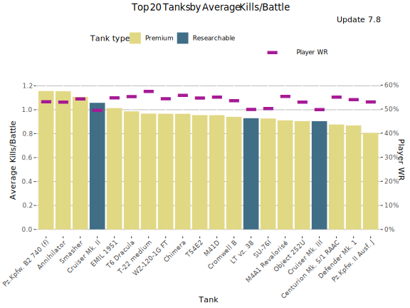
Highest Average Kills/Battle - Table
Average WR denotes average WR in a tank across all the players during the update. Player WR denotes the tank’s players' average WR across all the tanks during the update.
| Tank | Average Kills/Battle | Average WR | Player WR | Players | Battles/Player | Tank type |
|---|---|---|---|---|---|---|
| Annihilator | 1.15 | 59.7% | 53.1% | 14 830 | 98 | Premium |
| Chimera | 0.97 | 59.5% | 55.9% | 10 187 | 81 | Premium |
| Cruiser Mk. II | 1.06 | 59.4% | 49.7% | 985 | 47 | Researchable |
| Pz.Kpfw. II Ausf. J | 0.81 | 59.2% | 53.2% | 550 | 42 | Premium |
| NA | 0.99 | 59% | 55.4% | 4 211 | 70 | Premium |
| T54E2 | 0.96 | 58.8% | 54.8% | 3 083 | 58 | Premium |
| EMIL 1951 | 1.01 | 58.2% | 54.9% | 861 | 75 | Premium |
| LT vz. 38 | 0.93 | 58.1% | 50.1% | 592 | 37 | Researchable |
| Smasher | 1.11 | 58% | 54.4% | 10 479 | 84 | Premium |
| Cromwell B | 0.94 | 57.8% | 53.7% | 1 645 | 54 | Premium |
| Pz.Kpfw. B2 740 (f) | 1.16 | 57.8% | 53.2% | 773 | 70 | Premium |
| Centurion Mk. 5/1 RAAC | 0.88 | 57.5% | 55.2% | 976 | 58 | Premium |
| Object 252U | 0.91 | 57.1% | 53.1% | 8 682 | 67 | Premium |
| M41D | 0.95 | 57.1% | 55.2% | 793 | 53 | Premium |
| T-22 medium | 0.97 | 57% | 57.5% | 4 921 | 57 | Premium |
| Cruiser Mk. III | 0.90 | 56.8% | 49.9% | 1 245 | 41 | Researchable |
| WZ-120-1G FT | 0.97 | 56.7% | 54.5% | 6 247 | 73 | Premium |
| Defender Mk. 1 | 0.87 | 56.6% | 54.1% | 5 710 | 69 | Premium |
| SU-76I | 0.93 | 56.5% | 50.4% | 481 | 55 | Premium |
| M4A1 Revalorisé | 0.91 | 56.4% | 55.5% | 2 629 | 53 | Premium |
Highest Spot Rate
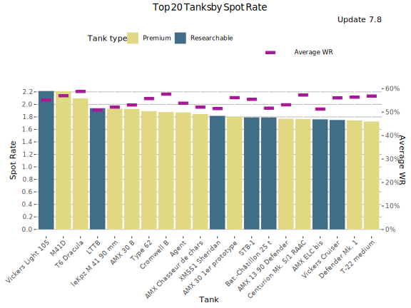
Highest Spot Rate - Table
| Tank | Spot Rate | Average WR | Player WR | Players | Battles/Player | Tank type |
|---|---|---|---|---|---|---|
| Vickers Light 105 | 2.21 | 55.3% | 57.2% | 4 513 | 69 | Researchable |
| M41D | 2.21 | 57.1% | 55.2% | 793 | 53 | Premium |
| NA | 2.10 | 59% | 55.4% | 4 211 | 70 | Premium |
| LTTB | 1.94 | 51% | 50.4% | 5 389 | 72 | Researchable |
| leKpz M 41 90 mm | 1.93 | 52.3% | 54.5% | 5 429 | 48 | Premium |
| AMX 30 B | 1.93 | 53.2% | 55.6% | 2 290 | 57 | Premium |
| Type 62 | 1.89 | 56% | 53.9% | 4 890 | 56 | Premium |
| Cromwell B | 1.88 | 57.8% | 53.7% | 1 645 | 54 | Premium |
| Agent | 1.87 | 53.9% | 51.3% | 1 765 | 46 | Premium |
| AMX Chasseur de chars | 1.84 | 52.3% | 53.3% | 2 485 | 61 | Premium |
| XM551 Sheridan | 1.82 | 51.7% | 54% | 11 332 | 75 | Researchable |
| AMX 30 1er prototype | 1.80 | 56.3% | 55.5% | 5 532 | 66 | Premium |
| STB-1 | 1.79 | 55.7% | 57.2% | 4 278 | 69 | Researchable |
| Bat.-Châtillon 25 t | 1.79 | 51.9% | 54.2% | 7 301 | 67 | Researchable |
| NA | 1.77 | 53.3% | 53.3% | 531 | 54 | Premium |
| Centurion Mk. 5/1 RAAC | 1.77 | 57.5% | 55.2% | 976 | 58 | Premium |
| AMX ELC bis | 1.76 | 51.5% | 49.2% | 2 034 | 55 | Researchable |
| Vickers Cruiser | 1.75 | 56.3% | 54% | 3 371 | 84 | Researchable |
| Defender Mk. 1 | 1.74 | 56.6% | 54.1% | 5 710 | 69 | Premium |
| T-22 medium | 1.73 | 57% | 57.5% | 4 921 | 57 | Premium |
Highest Hit Rate
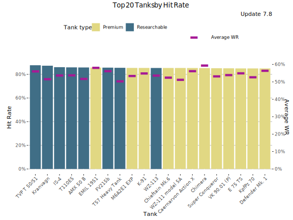
Highest Hit Rate - Table
| Tank | Hit Rate | Average WR | Player WR | Players | Battles/Player | Tank type |
|---|---|---|---|---|---|---|
| TVP T 50/51 | 87.7% | 56.2% | 57.9% | 2 266 | 125 | Researchable |
| Kranvagn | 87.3% | 51.8% | 52.3% | 8 432 | 79 | Researchable |
| IS-4 | 86.1% | 53.8% | 53.1% | 9 110 | 70 | Researchable |
| T110E5 | 85.9% | 53.9% | 55.3% | 6 474 | 66 | Researchable |
| AMX 50 B | 85.8% | 51.8% | 52.7% | 10 287 | 74 | Researchable |
| EMIL 1951 | 85.7% | 58.2% | 54.9% | 861 | 75 | Premium |
| FV215b | 85.7% | 56.3% | 59.3% | 4 037 | 73 | Researchable |
| T57 Heavy Tank | 85.5% | 50.4% | 51.6% | 13 969 | 75 | Researchable |
| M6A2E1 EXP | 85.4% | 53.6% | 51.8% | 5 813 | 72 | Premium |
| K-91 | 85.4% | 55% | 52.2% | 9 321 | 74 | Premium |
| WZ-113 | 85.4% | 53.7% | 55.6% | 2 418 | 61 | Researchable |
| Chieftain Mk.6 | 85.4% | 52.6% | 54.9% | 7 468 | 61 | Premium |
| WZ-111 model 5A | 85.4% | 51.3% | 54.2% | 1 358 | 53 | Premium |
| Caernarvon Action X | 85.4% | 56.3% | 54.3% | 4 309 | 58 | Premium |
| Chimera | 85.3% | 59.5% | 55.9% | 10 187 | 81 | Premium |
| Super Conqueror | 85.2% | 53.3% | 55.6% | 2 222 | 60 | Premium |
| VK 90.01 (P) | 85.1% | 54.1% | 55.2% | 2 483 | 58 | Premium |
| E 75 TS | 85% | 55.1% | 53.1% | 6 222 | 61 | Premium |
| KpfPz 70 | 85% | 52.8% | 52.2% | 8 434 | 66 | Premium |
| Defender Mk. 1 | 85% | 56.6% | 54.1% | 5 710 | 69 | Premium |
Most Popular Tanks
This graph shows the most popular tanks by the number of players during the update 7.8.
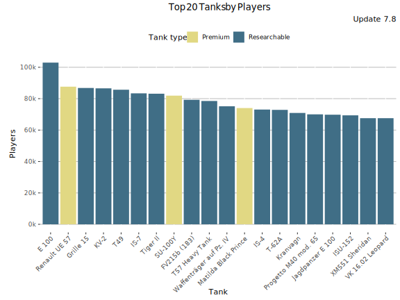
Most popular Tanks - Table
| Tank | Players | Average WR | Battles/Player | Tank type |
|---|---|---|---|---|
| E 100 | 102 952 | 51.8% | 22 | Researchable |
| Renault UE 57 | 87 639 | 51.1% | 5 | Premium |
| Grille 15 | 86 811 | 49.5% | 29 | Researchable |
| KV-2 | 86 576 | 50.3% | 19 | Researchable |
| T49 | 85 690 | 50.1% | 24 | Researchable |
| IS-7 | 83 394 | 51.7% | 17 | Researchable |
| Tiger II | 83 159 | 50.7% | 20 | Researchable |
| SU-100Y | 81 924 | 54.4% | 16 | Premium |
| FV215b (183) | 79 283 | 48.5% | 35 | Researchable |
| T57 Heavy Tank | 78 527 | 51.3% | 23 | Researchable |
| Waffenträger auf Pz. IV | 75 151 | 52.5% | 50 | Researchable |
| Matilda Black Prince | 74 029 | 54.6% | 12 | Premium |
| IS-4 | 73 067 | 53.9% | 19 | Researchable |
| T-62A | 72 866 | 51.5% | 19 | Researchable |
| Kranvagn | 70 907 | 51.9% | 22 | Researchable |
| Progetto M40 mod. 65 | 70 015 | 51.7% | 22 | Researchable |
| Jagdpanzer E 100 | 69 789 | 51.5% | 22 | Researchable |
| ISU-152 | 69 387 | 50.2% | 27 | Researchable |
| XM551 Sheridan | 67 573 | 49.7% | 21 | Researchable |
| VK 16.02 Leopard | 67 572 | 50.1% | 15 | Researchable |
Most played tanks
This graph shows the most played tanks by number of battles during the update 7.8.
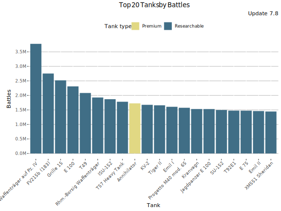
Most Played Tanks - Table
| Tank | Battles | Average WR | Players | Battles/Player | Tank type |
|---|---|---|---|---|---|
| Waffenträger auf Pz. IV | 3.8M | 52.5% | 75 151 | 50 | Researchable |
| FV215b (183) | 2.8M | 48.5% | 79 283 | 35 | Researchable |
| Grille 15 | 2.5M | 49.5% | 86 811 | 29 | Researchable |
| E 100 | 2.3M | 51.8% | 102 952 | 22 | Researchable |
| T49 | 2.1M | 50.1% | 85 690 | 24 | Researchable |
| Rhm.-Borsig Waffenträger | 1.9M | 51% | 63 212 | 30 | Researchable |
| ISU-152 | 1.9M | 50.2% | 69 387 | 27 | Researchable |
| T57 Heavy Tank | 1.8M | 51.3% | 78 527 | 23 | Researchable |
| Annihilator | 1.7M | 61.6% | 46 001 | 37 | Premium |
| KV-2 | 1.7M | 50.3% | 86 576 | 19 | Researchable |
| Tiger II | 1.7M | 50.7% | 83 159 | 20 | Researchable |
| Emil I | 1.6M | 55.3% | 65 568 | 25 | Researchable |
| Progetto M40 mod. 65 | 1.6M | 51.7% | 70 015 | 22 | Researchable |
| Kranvagn | 1.5M | 51.9% | 70 907 | 22 | Researchable |
| Jagdpanzer E 100 | 1.5M | 51.5% | 69 789 | 22 | Researchable |
| SU-152 | 1.5M | 51.7% | 62 381 | 24 | Researchable |
| T92E1 | 1.5M | 53.5% | 48 632 | 30 | Researchable |
| E 75 | 1.5M | 51.6% | 66 305 | 22 | Researchable |
| Emil II | 1.5M | 53.7% | 51 778 | 28 | Researchable |
| XM551 Sheridan | 1.4M | 49.7% | 67 573 | 21 | Researchable |
Lowest Performing Tanks
Lowest Relative WR
The graph shows the tanks with the lowest Relative WR. That is the average of players' WR in a tank compared to their average WR at the tier (in all same tier tanks). Relative WR is a measure of the performance/strength of the tank.
- All the statistics are about battles fought during the update 7.8 only.
- The impact of “Stock-grind battles” is reduced based on tier-specific requirement for total battles at the end of the update. Only players with more than 0-152 (depending on the tier) battles in a tank in the end of the update are included to eliminate the impact of the first battles in the tank (with sub-100% crew / modules).
- The players need to have 10-20 battles in a tank and 20-40 battles at the tier during the update.
- Average WR is the players’s average WR in the tank
- Player WR at Tier is the average WR of the players of the tank at the tier. Since different tiers have different difficulty, it is more meaningful to compare players' performance in the same tier tanks.
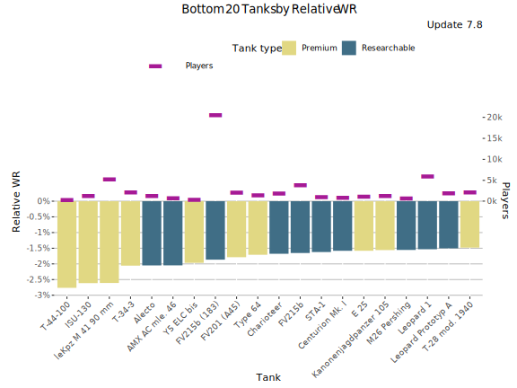
Lowest Relative WR - Table
| Tank | Relative WR | Average WR | Player WR at Tier | Players | Battles/Player | Tank type |
|---|---|---|---|---|---|---|
| T-44-100 | -2.76% | 49.5% | 52.3% | 412 | 57 | Premium |
| ISU-130 | -2.61% | 49.2% | 51.8% | 1 370 | 58 | Premium |
| leKpz M 41 90 mm | -2.61% | 52.3% | 54.9% | 5 323 | 48 | Premium |
| T-34-3 | -2.06% | 51.7% | 53.7% | 2 244 | 50 | Premium |
| Alecto | -2.05% | 48.3% | 50.3% | 1 361 | 42 | Researchable |
| AMX AC mle. 46 | -2.05% | 45.6% | 47.7% | 808 | 62 | Researchable |
| Y5 ELC bis | -1.97% | 48.2% | 50.2% | 443 | 55 | Premium |
| FV215b (183) | -1.87% | 49.4% | 51.2% | 20 643 | 86 | Researchable |
| FV201 (A45) | -1.79% | 48% | 49.8% | 2 160 | 46 | Premium |
| Type 64 | -1.71% | 49.9% | 51.6% | 1 525 | 52 | Premium |
| Charioteer | -1.68% | 48.2% | 49.8% | 1 954 | 68 | Researchable |
| FV215b | -1.65% | 56.6% | 58.3% | 3 911 | 73 | Researchable |
| STA-1 | -1.62% | 46.8% | 48.4% | 1 088 | 76 | Researchable |
| Centurion Mk. I | -1.58% | 46% | 47.5% | 912 | 70 | Researchable |
| E 25 | -1.58% | 50.3% | 51.9% | 1 193 | 60 | Premium |
| Kanonenjagdpanzer 105 | -1.56% | 54.5% | 56.1% | 1 339 | 54 | Premium |
| M26 Pershing | -1.55% | 45.7% | 47.2% | 796 | 70 | Researchable |
| Leopard 1 | -1.53% | 51.6% | 53.2% | 6 008 | 69 | Researchable |
| Leopard Prototyp A | -1.5% | 46.9% | 48.4% | 2 013 | 84 | Researchable |
| T-28 mod. 1940 | -1.48% | 49.5% | 51% | 2 226 | 52 | Premium |
Lowest Average WR
This graph shows the tanks with the lowest average WR during update 7.8. Player WR denotes the tank’s players' average WR across all the tanks during the update. Only tanks with more than 400 players are listed. This may filter out few upcoming tanks that are being tested.
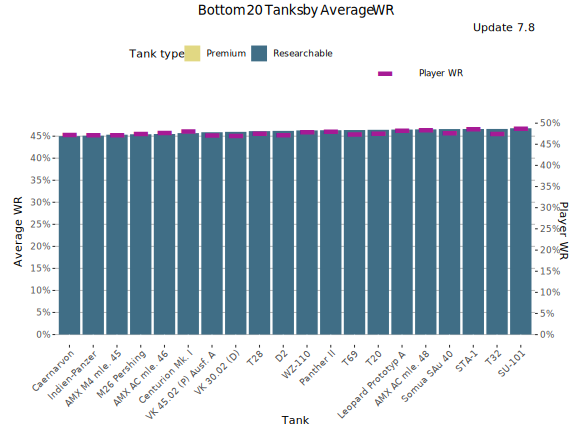
Lowest Average WR - Table
Average WR denotes average WR in a tank across all the players during the update. Player WR denotes the tank’s players' average WR across all the tanks during the update.
| Tank | Average WR | Player WR | Players | Battles/Player | Tank type |
|---|---|---|---|---|---|
| Caernarvon | 45% | 47.3% | 1 055 | 70 | Researchable |
| Indien-Panzer | 45.1% | 47.3% | 1 035 | 69 | Researchable |
| AMX M4 mle. 45 | 45.3% | 47.3% | 1 846 | 62 | Researchable |
| M26 Pershing | 45.4% | 47.6% | 918 | 71 | Researchable |
| AMX AC mle. 46 | 45.5% | 47.9% | 881 | 60 | Researchable |
| Centurion Mk. I | 45.7% | 48.2% | 984 | 69 | Researchable |
| VK 45.02 (P) Ausf. A | 45.9% | 47.2% | 1 316 | 68 | Researchable |
| VK 30.02 (D) | 46% | 47.1% | 527 | 60 | Researchable |
| T28 | 46.1% | 47.7% | 663 | 73 | Researchable |
| D2 | 46.2% | 47.3% | 477 | 35 | Researchable |
| WZ-110 | 46.3% | 48% | 879 | 67 | Researchable |
| Panther II | 46.3% | 48.1% | 1 921 | 71 | Researchable |
| T69 | 46.4% | 47.5% | 1 351 | 69 | Researchable |
| T20 | 46.4% | 47.6% | 754 | 63 | Researchable |
| Leopard Prototyp A | 46.5% | 48.4% | 2 497 | 82 | Researchable |
| AMX AC mle. 48 | 46.5% | 48.5% | 1 436 | 73 | Researchable |
| Somua SAu 40 | 46.6% | 47.8% | 470 | 29 | Researchable |
| STA-1 | 46.6% | 48.7% | 1 197 | 74 | Researchable |
| T32 | 46.6% | 47.6% | 1 952 | 70 | Researchable |
| SU-101 | 46.8% | 48.8% | 1 252 | 73 | Researchable |
Lowest Average Damage (tier-for-tier)
This graph shows the tanks with the lowest average damage vs tier average during update 7.8.
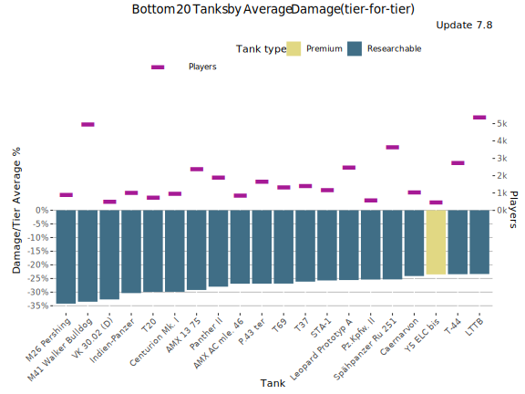
Lowest Average Damage (tier-for-tier) - Table
| Tank | Damage/Tier Average % | Average WR | Average Damage | Players | Tier | Vehicle Class | Tank type |
|---|---|---|---|---|---|---|---|
| M26 Pershing | -34.2% | 45.5% | 891 | 918 | 8 | Medium Tank | Researchable |
| M41 Walker Bulldog | -33.5% | 47.6% | 748 | 4 979 | 7 | Light Tank | Researchable |
| VK 30.02 (D) | -32.7% | 45.4% | 757 | 527 | 7 | Medium Tank | Researchable |
| Indien-Panzer | -30.3% | 45.4% | 944 | 1 035 | 8 | Medium Tank | Researchable |
| T20 | -29.9% | 46.3% | 788 | 754 | 7 | Medium Tank | Researchable |
| Centurion Mk. I | -29.9% | 45.7% | 950 | 984 | 8 | Medium Tank | Researchable |
| AMX 13 75 | -29.2% | 48.8% | 796 | 2 408 | 7 | Light Tank | Researchable |
| Panther II | -28% | 46.5% | 976 | 1 921 | 8 | Medium Tank | Researchable |
| AMX AC mle. 46 | -26.9% | 45.4% | 822 | 881 | 7 | Tank Destroyer | Researchable |
| P.43 ter | -26.9% | 47% | 823 | 1 686 | 7 | Medium Tank | Researchable |
| T69 | -26.9% | 46.2% | 991 | 1 351 | 8 | Medium Tank | Researchable |
| T37 | -26.1% | 48% | 643 | 1 432 | 6 | Light Tank | Researchable |
| STA-1 | -25.7% | 47% | 1 007 | 1 197 | 8 | Medium Tank | Researchable |
| Leopard Prototyp A | -25.6% | 46.7% | 1 216 | 2 497 | 9 | Medium Tank | Researchable |
| Pz.Kpfw. II | -25.4% | 51.4% | 236 | 601 | 1 | Light Tank | Researchable |
| Spähpanzer Ru 251 | -25.3% | 48.4% | 1 012 | 3 671 | 8 | Light Tank | Researchable |
| Caernarvon | -24.1% | 44.7% | 1 028 | 1 055 | 8 | Heavy Tank | Researchable |
| Y5 ELC bis | -23.5% | 48.6% | 861 | 483 | 7 | Medium Tank | Premium |
| T-44 | -23.4% | 48% | 1 038 | 2 756 | 8 | Medium Tank | Researchable |
| LTTB | -23.4% | 51% | 862 | 5 389 | 7 | Light Tank | Researchable |
Lowest Average Kills/Battle
This graph shows the tanks with the most kills per battle on average WR during update 7.8. Player WR denotes the tank’s players' average WR across all the tanks during the update.
- Only battles in maxed-out tanks are taken into account. It is assumed that a tank is maxed out if it is a) premium tank or b) player has more than certain number of battles in it in the end of the update (tier dependent: Tier I: 0 battles, Tier X: 152 battles.
- Since the data is fetched once per update, the stats for just released new Tech-Tree tanks is lower than it should be since the battles players ground the tanks from stock are included in the average.
- On the other hand new high tier tanks are often ground first by more active and also better players that distorts the stats for those.
- Only tanks with more than 400 players are listed. This may filter out few upcoming tanks that are being tested.
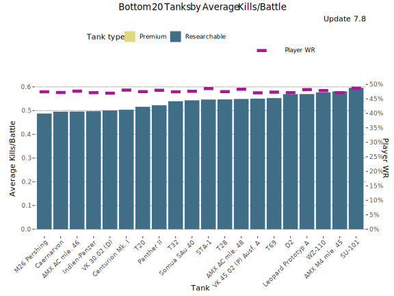
Lowest Average Kills/Battle - Table
Average WR denotes average WR in a tank across all the players during the update. Player WR denotes the tank’s players' average WR across all the tanks during the update.
| Tank | Average Kills/Battle | Average WR | Player WR | Players | Battles/Player | Tank type |
|---|---|---|---|---|---|---|
| Caernarvon | 0.50 | 45% | 47.3% | 1 055 | 70 | Researchable |
| Indien-Panzer | 0.50 | 45.1% | 47.3% | 1 035 | 69 | Researchable |
| AMX M4 mle. 45 | 0.58 | 45.3% | 47.3% | 1 846 | 62 | Researchable |
| M26 Pershing | 0.49 | 45.4% | 47.6% | 918 | 71 | Researchable |
| AMX AC mle. 46 | 0.50 | 45.5% | 47.9% | 881 | 60 | Researchable |
| Centurion Mk. I | 0.50 | 45.7% | 48.2% | 984 | 69 | Researchable |
| VK 45.02 (P) Ausf. A | 0.55 | 45.9% | 47.2% | 1 316 | 68 | Researchable |
| VK 30.02 (D) | 0.50 | 46% | 47.1% | 527 | 60 | Researchable |
| T28 | 0.55 | 46.1% | 47.7% | 663 | 73 | Researchable |
| D2 | 0.57 | 46.2% | 47.3% | 477 | 35 | Researchable |
| WZ-110 | 0.58 | 46.3% | 48% | 879 | 67 | Researchable |
| Panther II | 0.52 | 46.3% | 48.1% | 1 921 | 71 | Researchable |
| T69 | 0.55 | 46.4% | 47.5% | 1 351 | 69 | Researchable |
| T20 | 0.52 | 46.4% | 47.6% | 754 | 63 | Researchable |
| Leopard Prototyp A | 0.57 | 46.5% | 48.4% | 2 497 | 82 | Researchable |
| AMX AC mle. 48 | 0.55 | 46.5% | 48.5% | 1 436 | 73 | Researchable |
| Somua SAu 40 | 0.54 | 46.6% | 47.8% | 470 | 29 | Researchable |
| STA-1 | 0.55 | 46.6% | 48.7% | 1 197 | 74 | Researchable |
| T32 | 0.54 | 46.6% | 47.6% | 1 952 | 70 | Researchable |
| SU-101 | 0.60 | 46.8% | 48.8% | 1 252 | 73 | Researchable |
Lowest Spot Rate
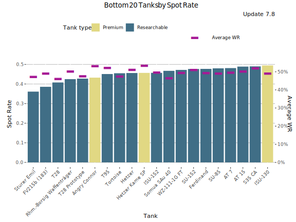
Lowest Spot Rate - Table
| Tank | Spot Rate | Average WR | Player WR | Players | Battles/Player | Tank type |
|---|---|---|---|---|---|---|
| Sturer Emil | 0.36 | 47.3% | 48.5% | 2 587 | 66 | Researchable |
| FV215b (183) | 0.39 | 49.1% | 52.7% | 22 212 | 84 | Researchable |
| T28 | 0.41 | 46.1% | 47.7% | 663 | 73 | Researchable |
| Rhm.-Borsig Waffenträger | 0.42 | 50.3% | 51.1% | 14 048 | 85 | Researchable |
| T28 Prototype | 0.43 | 47.7% | 48.7% | 1 923 | 71 | Researchable |
| Angry Connor | 0.43 | 53.2% | 52.8% | 2 231 | 59 | Premium |
| T95 | 0.45 | 52.2% | 50.2% | 1 079 | 103 | Researchable |
| Tortoise | 0.45 | 47.5% | 47.3% | 1 455 | 100 | Researchable |
| Hetzer | 0.46 | 51.2% | 48.5% | 2 647 | 54 | Researchable |
| Hetzer Kame SP | 0.46 | 53.5% | 49.6% | 523 | 40 | Premium |
| ISU-152 | 0.46 | 49.7% | 50.1% | 13 317 | 84 | Researchable |
| Somua SAu 40 | 0.47 | 46.6% | 47.8% | 470 | 29 | Researchable |
| WZ-111-1G FT | 0.47 | 49.5% | 49.4% | 1 160 | 65 | Researchable |
| SU-152 | 0.48 | 51.2% | 50.5% | 11 590 | 76 | Researchable |
| Ferdinand | 0.48 | 49.5% | 48.5% | 1 829 | 74 | Researchable |
| SU-85 | 0.48 | 49.1% | 48% | 2 079 | 51 | Researchable |
| AT 7 | 0.48 | 49.7% | 47.7% | 1 167 | 62 | Researchable |
| AT 15 | 0.49 | 50.3% | 48.4% | 2 196 | 83 | Researchable |
| S35 CA | 0.49 | 52.1% | 49.2% | 1 255 | 51 | Researchable |
| ISU-130 | 0.49 | 49.1% | 51.9% | 1 414 | 57 | Premium |
Lowest Hit Rate
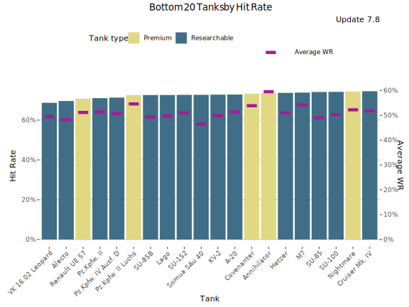
Lowest Hit Rate - Table
| Tank | Hit Rate | Average WR | Player WR | Players | Battles/Player | Tank type |
|---|---|---|---|---|---|---|
| VK 16.02 Leopard | 68.7% | 49.6% | 48.6% | 7 174 | 71 | Researchable |
| Alecto | 69.6% | 48.4% | 48.6% | 1 726 | 38 | Researchable |
| Renault UE 57 | 70.8% | 51.3% | 49.5% | 3 940 | 31 | Premium |
| Pz.Kpfw. II | 71% | 51.6% | 47.8% | 601 | 37 | Researchable |
| Pz.Kpfw. IV Ausf. D | 71.3% | 50.9% | 48.3% | 3 192 | 53 | Researchable |
| Pz.Kpfw. II Luchs | 72.6% | 54.7% | 49.8% | 1 645 | 41 | Premium |
| SU-85B | 72.6% | 49.4% | 48.2% | 1 384 | 46 | Researchable |
| Lago | 72.6% | 49.9% | 47.6% | 1 390 | 38 | Researchable |
| SU-152 | 72.7% | 51.2% | 50.5% | 11 590 | 76 | Researchable |
| Somua SAu 40 | 72.7% | 46.6% | 47.8% | 470 | 29 | Researchable |
| KV-2 | 72.8% | 50% | 49.8% | 12 900 | 75 | Researchable |
| A-20 | 72.8% | 51.6% | 48.1% | 2 682 | 49 | Researchable |
| Covenanter | 73.3% | 54% | 50.6% | 1 106 | 47 | Premium |
| Annihilator | 73.5% | 59.7% | 53.1% | 14 830 | 98 | Premium |
| Hetzer | 73.7% | 51.2% | 48.5% | 2 647 | 54 | Researchable |
| M7 | 73.8% | 54.4% | 49.1% | 4 009 | 61 | Researchable |
| SU-85 | 74.1% | 49.1% | 48% | 2 079 | 51 | Researchable |
| SU-100 | 74.2% | 50.4% | 48.9% | 5 064 | 68 | Researchable |
| Nightmare | 74.4% | 52.4% | 49.9% | 1 105 | 54 | Premium |
| Cruiser Mk. IV | 74.5% | 51.9% | 48.8% | 2 200 | 53 | Researchable |
Least Popular Tanks
This graph shows the least popular tanks by the number of players during the update 7.8. The graph includes also unreleased tanks in super-testing.
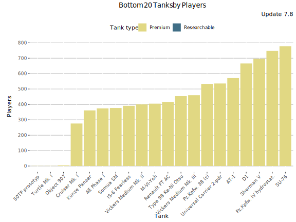
Least Played Tanks - Table
| Tank | Players | Average WR | Battles/Player | Tank type |
|---|---|---|---|---|
| Turtle Mk. I | 1 | 50% | 2 | Premium |
| 50TP prototyp | 1 | 53.3% | 15 | Premium |
| Object 907 | 4 | 65% | 2 | Premium |
| Cruiser Mk. I | 276 | 58.8% | 4 | Premium |
| Kunze Panzer | 361 | 65.5% | 22 | Premium |
| AE Phase I | 374 | 70% | 35 | Premium |
| Somua SM | 377 | 72.7% | 27 | Premium |
| IS-6 Fearless | 391 | 71.2% | 8 | Premium |
| Vickers Medium Mk. II | 400 | 54.3% | 5 | Premium |
| M-VI-Yoh | 405 | 69.7% | 106 | Premium |
| Renault FT AC | 415 | 55.3% | 4 | Premium |
| Type 98 Ke-Ni Otsu | 454 | 59% | 22 | Premium |
| Vickers Medium Mk. III | 460 | 52.2% | 8 | Premium |
| Pz.Kpfw. 38 (t) | 533 | 54.3% | 7 | Premium |
| Universal Carrier 2-pdr | 536 | 53.9% | 5 | Premium |
| AT-1 | 571 | 50.3% | 4 | Premium |
| D1 | 666 | 55.7% | 3 | Premium |
| Sherman V | 696 | 58% | 6 | Premium |
| Pz.Kpfw. IV hydrostat. | 748 | 57.6% | 4 | Premium |
| SU-76 | 777 | 55.5% | 8 | Premium |
Least played tanks
This graph shows the most played tanks by number of battles during the update 7.8.
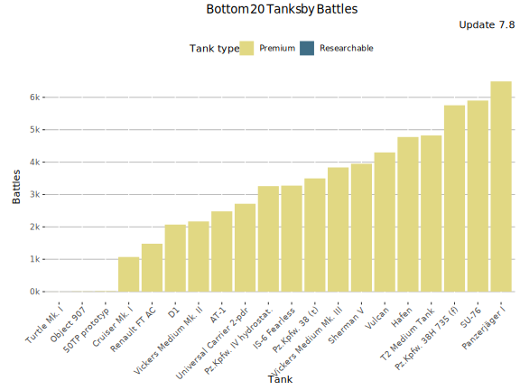
Least Played Tanks - Table
| Tank | Battles | Average WR | Players | Battles/Player | Tank type |
|---|---|---|---|---|---|
| Turtle Mk. I | 2 | 50% | 1 | 2 | Premium |
| Object 907 | 8 | 65% | 4 | 2 | Premium |
| 50TP prototyp | 15 | 53.3% | 1 | 15 | Premium |
| Cruiser Mk. I | 1 070 | 58.8% | 276 | 4 | Premium |
| Renault FT AC | 1 480 | 55.3% | 415 | 4 | Premium |
| D1 | 2 071 | 55.7% | 666 | 3 | Premium |
| Vickers Medium Mk. II | 2 168 | 54.3% | 400 | 5 | Premium |
| AT-1 | 2 479 | 50.3% | 571 | 4 | Premium |
| Universal Carrier 2-pdr | 2 714 | 53.9% | 536 | 5 | Premium |
| Pz.Kpfw. IV hydrostat. | 3 258 | 57.6% | 748 | 4 | Premium |
| IS-6 Fearless | 3 274 | 71.2% | 391 | 8 | Premium |
| Pz.Kpfw. 38 (t) | 3 497 | 54.3% | 533 | 7 | Premium |
| Vickers Medium Mk. III | 3 835 | 52.2% | 460 | 8 | Premium |
| Sherman V | 3 950 | 58% | 696 | 6 | Premium |
| Vulcan | 4 299 | 63% | 1 281 | 3 | Premium |
| Hafen | 4 775 | 56.1% | 1 301 | 4 | Premium |
| T2 Medium Tank | 4 823 | 57.2% | 905 | 5 | Premium |
| Pz.Kpfw. 38H 735 (f) | 5 755 | 53% | 1 512 | 4 | Premium |
| SU-76 | 5 901 | 55.5% | 777 | 8 | Premium |
| Panzerjäger I | 6 492 | 55.4% | 984 | 7 | Premium |
-

This work is licensed under a Creative Commons Attribution-ShareAlike 4.0 International License.
-

-

BlitzAnalysiz[] is a player-created website for World of Tanks: Blitz and developed in accordance with WG DPP. This site is not an official Wargaming or World of Tanks: Blitz website. World of Tanks Blitz and Wargaming are trademarks of Wargaming.net Limited. Game content and materials copyright © Wargaming.net. All rights reserved.